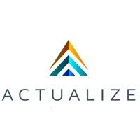

Brad Edmonds
Welcome to my personal website
Learn More
About Me
With a background in SaaS, I have been able to experience the importance of intuitive and clean user interfaces partnered with the power of robust, scalable data infrastructures - neither of which are possible without effective communication, teamwork, and analytical reasoning behind them. I bring with me a strong foundation in interpersonal communication and collaboration with an inquisitive curiosity about all things technical as well as a dedication to lifelong learning and growth.
Proficient in Ruby, Rails, SQL, HTLM, CSS, Bootstrap, Javascript, and Vue.
Knowledgible of Agile methodologies, Python, & Django.
Professional:
Director of Business Development, Metro Monitor, Inc
I currently manage a small sales team for a SaaS company in the public relations and communications industry. Whenever I'm asked what I do, I typically tell people I get paid to watch TV for a living... which isn't a bad description of what I do in this nifty gig.
Personal:
Music and concerts
If you ever need a concert buddy, I'm your guy. I appreciate all genres and will rarely say "no" to seeing live music. I go to so many concerts I'm developing an app as a personal project to track what shows are coming to town (check the GitHub!)

Coding Experience:
Graduate of Actualize Coding Bootcamp
Like many people I found myself with a lot of time on my hands in 2020. I decided to be productive with it and learn some code. I've always loved to learn new things, and there's no shortage of new information in coding so I dove into a bootcamp. Through the bootcamp I was exposed to Ruby and Rails as a backend framework (with a tiny bit of Python and Django sprinkled in), Vue.js as a front end framework while also incorporating Bootstrap along with HTML & CSS. I've worked with 3rd party API's, GitHub, and have a solid foundation to build upon.
-
Professional Experience
I've been working at Metro Monitor in Birmingham, AL since 2014 leading the sales team including implementing sales strategies, recruiting new representatives, and managing overall sales operations
-
Education
I have a BS in Business Administration from LaGrange College and graduated from the Actualize Coding Bootcamp with a certificate in full stack development in May 2021
-
Coding Experience
Through Actualize I have been exposed to Ruby, Rails, Git/GitHub, SQL, HTML, CSS, Bootstrap, Javascript, Vue.js. I've also built a concert tracking app as part of the Actualize bootcamp that I'm continuing to develop. Feel free to check out my GitHub to see more!
-
Hobbies and Interest
I'm a huge music lover. In non-COVID times I'd typically attend one or two concerts every week. When I'm not learning more about coding or attending concerts, you can find me somewhere in nature. I love to hike and trail recommendations are always welcome!
Contact Me
Please feel free to reach out to me regarding coding and tech interests, anything music related, or if you have any questions